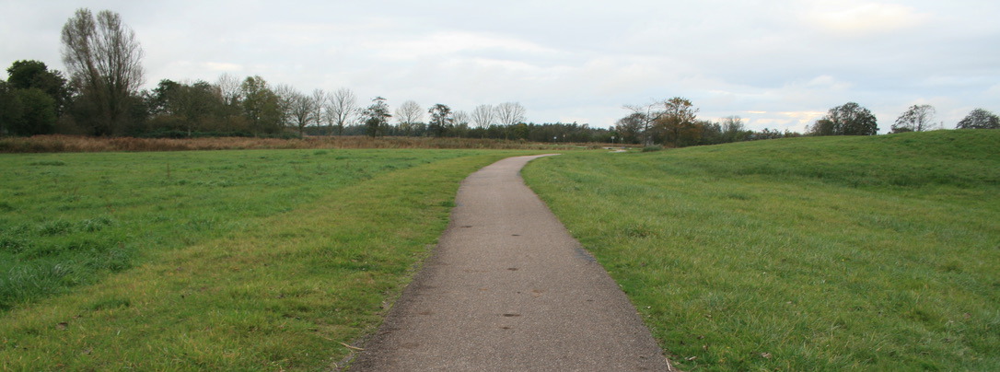
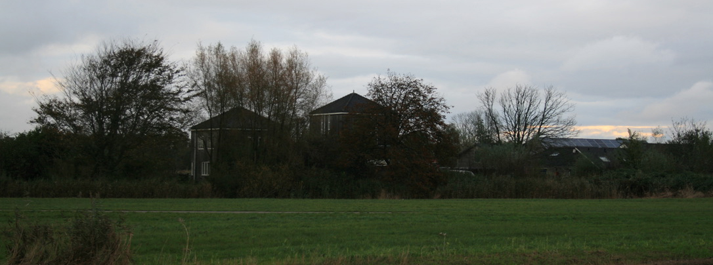
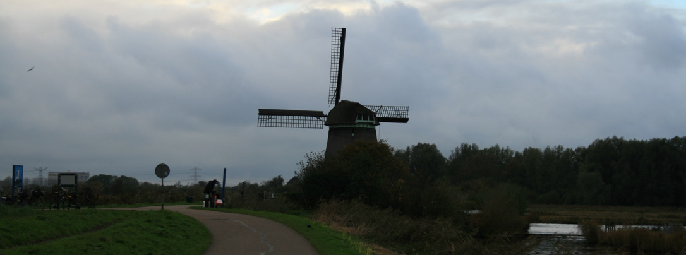

Voedselpark Amsterdam
De Amsterdam Donut Coalitie support Voedselpark Amsterdam , dit is een intitiatief waar het plan ligt een bedrijventerein van 43 hectare te veranderen in een agro-ecologisch landschapspark. Hiermee willen ze laten zien wat lokaal voedseltelen voor positief effect heeft op ons eco-systeem!
De Verbroederij
De VerbroederIJ is een tentje vlak naast de Oostpond in Amsterdam-Noord, dit is een restaurant met een moestuin, een biggenverblijf, en een klusplek voor buurtbewoners. Mensen komen hier samen om lekker bezig te zijn
Boeren voor Buren
Bij Boeren voor Buren kunnen Amsterdammers met een klein budget goedkoop gezond voedsel bestellen dat boeren uit de regio overhouden, zonder tussenkomst van supermarkten. Dit initiatief, ontstaan tijdens de coronacrisis, verbindt voedseloverschotten van boeren met mensen met een kleine beurs. Zo wordt voedselverspilling verminderd en kunnen huishoudens tegen lage kosten toegang krijgen tot , lokaal geproduceerd voedsel.